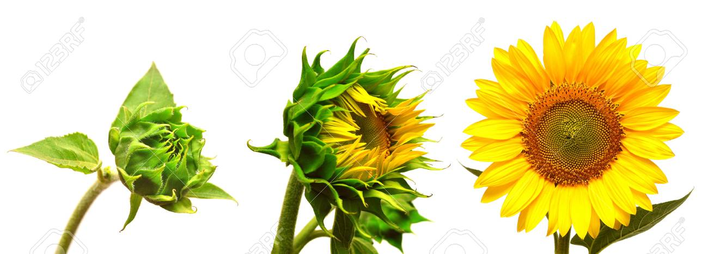
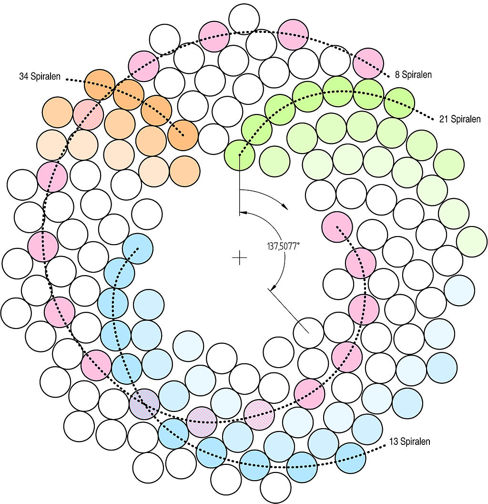
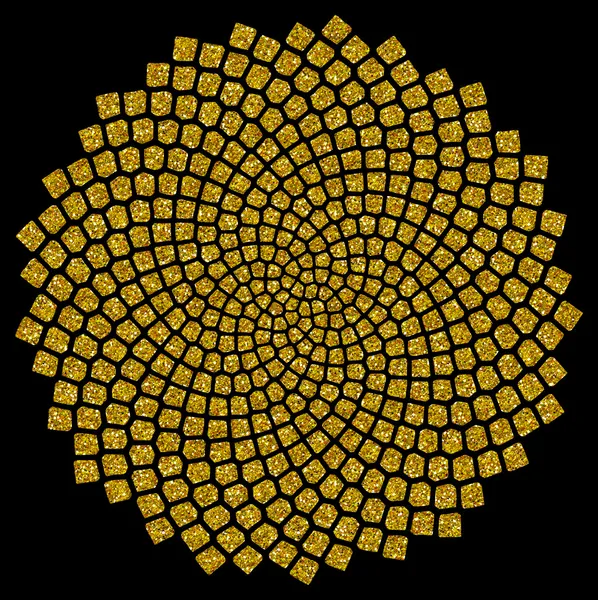

Das Wachstum der Sonnenblume

Diese Beobachtung brachte mich zu der Erstehung meines Codes.

Diese Abbildung zeigt, wie die Samen in einer Spiralen-Form wachsen. Die Fibonacci-Folge kann in der Entstehung der Samen wiedererkannt werden.

Dieses Bild wurde in die KI gegeben.
Zum Code
Durch dieses Button gelangst du zu dem Hauptprojekt. Der eigentliche Code:
Zum Hauptprojekt